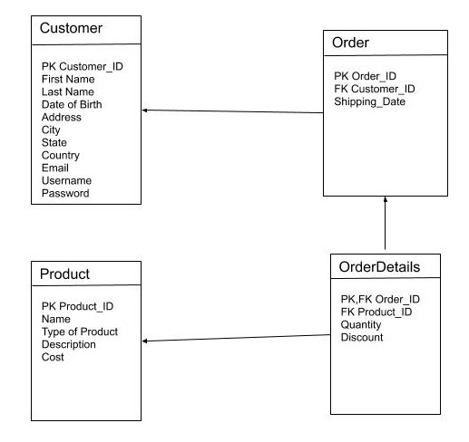

Purpose of Project (Motivations)
The purpose of this project is to create an e-commerce website that provides a platform for people
to buy and sell COVID essentials easily. Since 2020 has been a tough year for people, Our team wants
to bring safety and style at the same time. Our project wants to have the people walking in style
but keeping themselves and others safe. It is a type of motivation to have people show off their looks
and bring a sense of care in this world. There is a sense of bringing things to life such as the health
of elders and encouraging them. The brand of Co-Vidly Safe is to share a community where the target market
is everyone. Saftey and social distancing is critical during a pandemic. The enthusiasm of life
itself has those different values of temperature. Our project wants people to bring on their sense
of being part of a community. Where the temperature is high, medium, and low, a community of
people encouraging others is awesome.
List of Deliverables
Front-End: The User Interface is developed using HTML, CSS, JavaScript, jQuery, React, and Bootstrap.
We decided to use the React framework to help us in organizing the modules and components on the
website. Besides that, we are using jQuery and Bootstrap to help us in creating the design effectively and
efficiently. By using Bootstrap, we can save time to create more components on our website while
making sure our design can provide a good user experience. Some pages that will be in the deliverables
are:
- Home page
- “About Us” page
- User’s Sign Up page (buyers and sellers will have the same UI)
- User’s Sign In page (buyers and sellers will have the same UI)
- Products display page
- Product specification page
- Cart display page
- Sign Out page
- Buyers’ account page
- Sellers’ account page
- Transaction or payment page
- Confirmation page
Our web pages will follow the following branding guide:
- Primary colors:
- Black (RGB: 0-0-0)
- Sandy Brown/Orange (RGB: 241, 170, 107)
- Daintree/Dark Navy (RGB: 1, 43, 54)
- Mystic/White (RGB: 228-235-234)
- Horizon/Light Blue (RGB: 103, 132, 146)
- Secondary colors:
- Maize/Yellow (RGB: 254-215-157)
- Cognac/Red (RGB: 161, 59, 37)
- Lunar Green/Dark Green (RGB: 62, 75, 65)
- Typography:
- Header Fonts: Playfair Display
- Body Fonts: Lato
- Font Sizes: 50/30/15
Back-End: We are using Node JS, Express JS, and SQLite to create the back-end side of the web
application. Node JS and Express JS improves the scalability and the performance, while SQLite provides
a fast and reliable data service for our application. Functionalities that will be included in the
service side are:
- Adding, updating, and deleting products from the cart for buyers
- Adding, updating, and deleting products from the shop listing for sellers
- Sending a message to admins on the “Contact Us” page
- Creating and updating an account
- Signing in to an account
- Database for users’ and products’ information
- Creating a payment
Use Case analysis
Our use case diagram utilizes a relationship between the customer and admin which is the employee.
Since, we encourage customers to sell their own products such as masks, health kits, clothes, and
other products that provide a safe environment. The customer role is to be a part of the system
which is to buy products or sell their own products. The admin will sell company products and manage
the customer’s products.
The customer can sell a product but must go through an admin.
The customer fill out a form and gives an amount of time the product can be shipped.
The admin will decide if the customer’s product is considered a Co-Vid safe product.
If the admin deems to be not a product that fits the website goal, then the admin will send a
message to the customer saying, “This product is not Co-Vidly Safe”.
When the customer is shopping, they can add products to their cart and delete products in their cart.
When the customer is done shopping, then they can click on the cart icon and review the products in
their cart. Then they can click on proceed to checkout and start purchasing the products.
The customer will choose how to pay for their products by electronically paying for the products.
They can pay by PayPal, add a credit card or debit card information, or others that involve their bank.
The admin will set the shipping tax and date when adding a product.
When the customer goes through the checkout process, then the products will be shipped to their address.
Database Design

The database design is pretty simple for an e-commerce website.
The website needs to record the Customers, Products, Orders, and Order Details.
From the customer, what is stored is the full name, date of birth, location, email, username,
and password. This is by creating an ID for that customer to purchase or sell products on this website.
The customer will be in our database when they register for the website. The products will be stored
when an admin fills in a form that will be linked to our database. The admin also needs to input how
much of the product there is in the warehouse and suggest a discount. If the customer wants to sell
their products, they must fill out a form that will be sent to the admin. When a customer orders a
product on our website, the database needs an ID to create an order which will have a shipping date
for our admin’s to see.